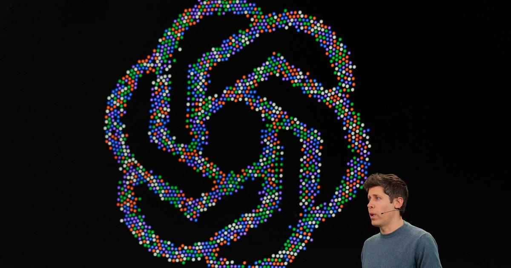

Business Insider первым сообщил в пятницу, что Дэвид Робинсон, топ-менеджер команды Safety Systems OpenAI, покинул компанию на прошлой неделе. В субботу вышло его эссе в The Atlantic, где он прямо пишет: «Я согласен с недавно ушедшими коллегами — компании, создающие эту технологию, недостаточно осторожны». По его словам, культура «неудержимого оптимизма», при которой проблемы решаются по мере появления, не подходит для выращивания «искусственных разумов, которые могут быть умнее нас».
Робинсон занимался прозрачностью безопасности: участвовал в разработке и публикации system cards — открытых отчётов о возможностях и ограничениях моделей OpenAI.
Отставка накладывается на серию событий. В четверг OpenAI сообщила, что «рассталась» с ещё тремя исследователями — по версии компании, они нарушили правила обращения с чувствительной информацией (первым сообщил WSJ, подтвердили TechCrunch и CBS News). Ранее, в июле, компанию оставил Йоханнес Хайдекке, глава Safety Systems. В августе ушла руководительница отдела этики Хлоя Бакар. На фоне взлома Hugging Face и серии инцидентов с «непослушными» моделями это выглядит уже как исход целого слоя людей, отвечавших за безопасность.
Сам Робинсон ещё в начале сентября писал в X, что в OpenAI «действительно стремительно всё меняется, но не знаю, достаточно ли быстро мы меняемся».
Сэм Альтман на ежегодной конференции разработчиков во вторник заявил, что безопасность и выравнивание должны опережать возможности моделей. Формального ответа на эссе Робинсона пока нет; формулировка об увольнении трёх исследователей — «расстались из-за нарушения политик sharing чувствительных информации» — от компании поступила через её представителей СМИ.
Отдельного официального анонса об уходе Робинсона от OpenAI нет — факт подтверждён Business Insider и личным эссе самого Робинсона в The Atlantic, это честно отмечено в материале.